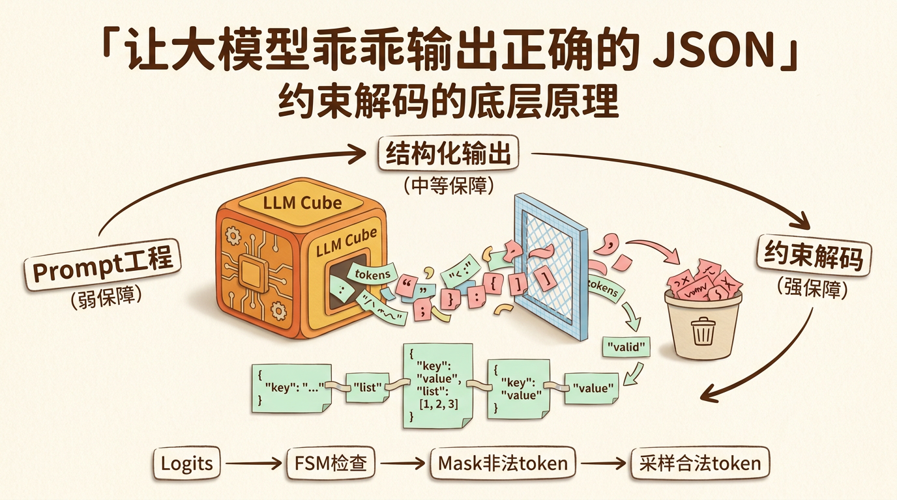
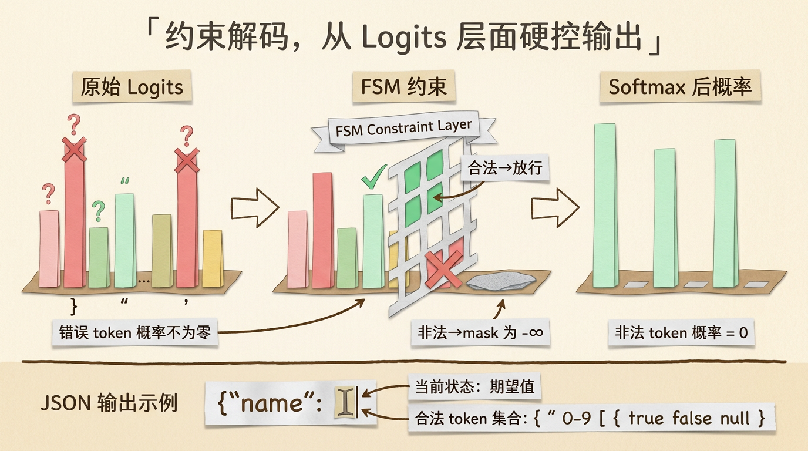
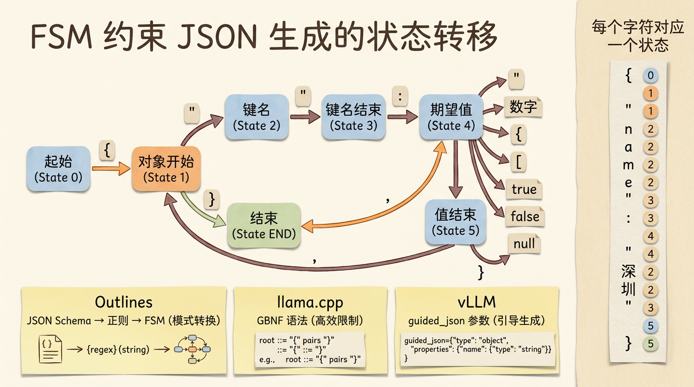
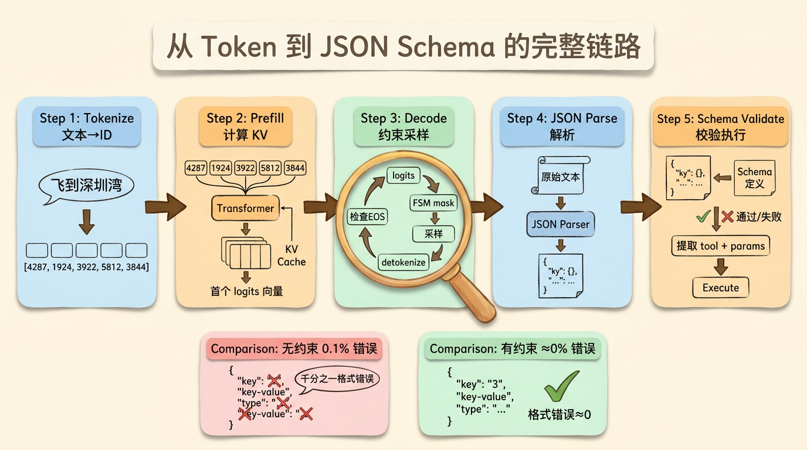

让大模型乖乖输出正确的 JSON：约束解码的底层原理
做 Agent 的同学大概都经历过这个时刻。
你的 Agent 系统上线了，跑得挺好的。模型在大部分情况下都能正确调用工具，返回格式工整的 JSON。你看着监控面板上 99.7% 的成功率，心情不错。
然后凌晨三点，告警响了。
一条线上日志显示，模型输出了这么个东西。
1 | {"tool": "takeoff", "params": {"altitude": 100, "location": "深圳湾公园",}} |
注意到了吗。location 后面多了一个逗号。
标准的 JSON 规范里，对象最后一个属性后面不能有逗号。你的 JSON Parser 直接炸了，这个工具调用就失败了。
凌晨三点的告警，查了半天，就因为一个逗号。

三层防御，为什么还是防不住
大部分 Agent 系统对工具调用的格式保障，都会做三层。
第一层是 Prompt 工程。在 System Prompt 里写清楚，你输出的 Function Call 必须严格符合以下 JSON Schema。然后再加几个 Few-shot 示范，告诉模型”好的输出长这样”。
这招有用，但治标不治本。因为模型的本质是一个概率采样器。每一步它从词表里选一个 token，选择依据是每个 token 的概率分布。你在 Prompt 里说”不要多输出逗号”，模型的理解是”逗号在这个位置的 probability 应该低一些”。但低不等于零。只要概率不为零，在足够多的采样次数下，它就一定会发生。
第二层是模型厂商的结构化输出能力。现在很多模型 API 都支持 JSON mode、Function Calling 或者更严格的 Structured Outputs。这里要分清楚：JSON mode 通常只保证输出更像合法 JSON；Function Calling 会把工具调用包装成专门结构；严格的 Structured Outputs 才会把 JSON Schema 约束直接纳入生成过程。
但”大幅降低”不等于”消除”。如果只是靠普通 JSON mode、Prompt 约束和后置解析，生产环境里仍然可能遇到格式错误。具体表现五花八门，多的逗号、缺的引号、不匹配的括号、甚至偶尔蹦出来一段中文解释”这个工具的作用是…”。
第三层是后置兜底。模型输出了文本之后，先用 JSON Parser 解析。如果解析失败，用各种 hack 手段修复，正则去尾逗号，补全缺失的括号，或者干脆把错误信息喂回模型重试一次。
这三层加在一起，确实能把错误率压到一个很低的水平。但”很低”不是”零”。而且在某些场景下，一次错误就是不可接受的。比如你的 Agent 正在控制一架无人机执行巡检任务，模型输出了一个非法的工具调用参数，任务中断了，无人机悬停在天上，等谁去处理？
图片
换一个思路，从 Prompt 层面降到 Logits 层面
约束解码的核心思想其实就一句话。
与其请求模型输出正确的格式，不如从物理层面阻止它输出错误的格式。
什么意思？
模型的生成过程，本质上每一步都是一次多选题。词表大小是 N（通常 3-15 万个 token），模型输出一个 N 维的 logits 向量，每个位置对应一个 token 的原始分数。然后通过 softmax 转成概率分布，采样出一个 token。
传统的 Prompt 工程是在改变 logits 的分布。通过 Prompt 里的指令和示例，让模型对正确格式的 token 给更高的分数，对错误格式的 token 给更低的分数。但模型的参数决定了它对所有 token 都会有一个基础分数，Prompt 只是在这个基础上做调整。
约束解码不走这条路。它直接在 logits 上动手。
具体来说，在每一步采样之前，推理引擎会根据当前输出的状态，计算出”下一步哪些 token 是合法的”。然后把所有不合法 token 的 logit 直接设为负无穷。
经过 softmax 之后，负无穷对应的概率就是零。绝对的零，不是”接近零”，是完全不可能被采样到。
这样模型就只能从合法 token 中选择。不管模型的概率分布怎么倾斜，它都不可能输出一个被 mask 掉的 token。

有限状态机，合法性的计算引擎
那”哪些 token 是合法的”这个判断怎么做？
答案通常是有限状态机（FSM）、上下文无关文法（CFG），或者它们在具体系统里的变体。
为什么有些系统会用 CFG 而不只是 FSM？因为完整 JSON 语法允许递归嵌套（对象里面套对象，数组里面套数组），这类无限深度的括号配对超出了普通 FSM 的表达能力，需要更强的文法来描述。反过来说，如果你的 Schema 有固定深度，或者实现只支持某个 JSON Schema 子集，也可以被编译成有限状态机或正则风格的约束。
起始状态，期望 {。遇到 {，进入”期望键名或结束”状态。遇到 "，进入”键名字符串”状态。遇到闭合的 "，回到”期望冒号”状态。遇到 :，进入”期望值”状态。值可以是字符串、数字、对象或数组，每种类型又有自己的子状态机。
把这个状态机建出来之后，每一步解码的操作就很清晰了。当前输出了一段文本，状态机推进到某个状态。根据这个状态，计算出下一步允许的 token 集合。在 logits 上 mask 掉集合之外的所有 token。模型采样。输出一个必定合法的 token。状态机推进。重复。
Outlines 这个开源库把这个流程做到了极致。它可以把支持范围内的 JSON Schema 编译成对应的正则表达式，再把正则表达式转成有限状态机。你只需要提供一个 Schema，它就能在推理时自动约束模型的每一步输出。
llama.cpp 走的是另一条路。它支持 GBNF（GGML BNF）格式的语法描述，你可以定义自己的语法规则来约束输出。比 JSON Schema 更灵活，可以约束任意文本格式，不限于 JSON。
vLLM 也提供了类似能力。通过结构化输出参数传入 JSON Schema、正则表达式、choice 或 grammar，推理时会调用相应后端应用约束。具体参数名和支持范围会随 vLLM 版本变化，工程上要以当前官方文档为准。

一个具体的例子
假设你的 Agent 有一个工具 fly_to，参数是 location（字符串）和 altitude（数字）。对应的 JSON Schema 是这样的。
1 | { |
开启约束解码之后，模型在输出这个工具调用时的每一步都被严格约束。
第一步，模型只能输出能让文本进入合法 JSON 对象前缀的 token。不是”大概率输出 {“，而是”只能从合法前缀 token 集合里选”。在真实 tokenizer 里，这个 token 可能是 {，也可能包含空白、换行或多个字符。
第二步，同样只能输出能继续保持合法 JSON 的 token。逻辑上对象键名必须用引号包裹，但实际 mask 的单位仍然是 token，不是单个字符。
中间的键名和值部分，模型可以自由选择内容（字符串里的字符和数字），但格式性 token（引号、冒号、逗号、括号）的出现位置和顺序是硬性约束的。
最后一步，只能输出能让结构合法闭合的 token。正常情况下不会多一个逗号，也不会少一个括号。
整个过程中，模型仍然在”决定写什么内容”（比如 location 的值是”深圳湾公园”还是”北京故宫”），但”怎么写”（JSON 的格式结构）完全由约束解码接管了。
图片
从 Token 到 JSON Schema 的完整链路
把这个过程放回完整链路里看，会更清楚约束解码到底插在哪一层。
整个链路可以分五步。
第一步，Tokenize。用户的自然语言输入经过 Tokenizer，转成 token ID 序列。Tokenizer 本质上是一个查表操作，BPE 或者 WordPiece 算法把文本切成子词单元，每个子词单元对应词表里的一个 ID。
第二步，Prefill。token ID 序列送入模型，经过 Embedding 层转成向量，然后逐层通过 Transformer。每一层的 Attention 模块计算出 Q、K、V，存入 KV Cache。Prefill 结束后，我们有了所有输入 token 的 KV Cache，以及模型对下一个 token 的预测 logits。
第三步，Decode 循环。这是生成的核心。每一步，上一步生成的 token ID 送入模型（连同 KV Cache）。模型只需要做一次前向传播（因为只有新增的一个 token），输出一个 logits 向量。如果开启了约束解码，这一步的 logits 会被 FSM mask 一轮，不合法 token 的 logit 设为负无穷。然后采样，根据 temperature 和 top-p 从合法 token 中选一个。这个 token 被 detokenize 回文本，拼接到输出里。循环继续，直到遇到 EOS token。
第四步，JSON 解析。完整的输出字符串（比如 {"tool": "fly_to", "params": {"location": "深圳湾", "altitude": 100}}）经过 JSON Parser 解析成结构化对象。如果开了约束解码，并且没有遇到 max tokens 截断、服务端拒答、连接中断或 schema 不支持等边界情况，这一步通常不会因为 JSON 语法失败。如果没开，解析失败就走兜底逻辑。
第五步，Schema 校验。解析出来的 JSON 对象跟预定义的 Function Call Schema 做比对。检查必需字段是否齐全，字段类型是否正确，枚举值是否在允许范围内。全部通过后，提取出 tool name 和参数，交给 Agent Executor 执行。
这五步里，约束解码作用在第三步的采样环节。它是最后一道也是最强的一道格式保障。

性能代价
约束解码这么好，有没有代价？
有。
最大的代价是每一步都要做 FSM 状态推进和 logits mask。这个计算量本身不大（跟 Transformer 前向传播比），但它是串行的，没法跟模型的计算并行。
实际开销取决于 Schema 复杂度、词表大小、约束后端实现和推理引擎集成方式。有的场景开销很小，有的复杂 Schema 会明显拖慢生成。Schema 越复杂，每步合法 token 集合计算和 mask 的成本通常越高。
不过考虑到它能在受支持的 Schema 和正常生成边界内显著降低格式错误，这点性能代价通常是值得的。特别是对于 Agent 系统，一次工具调用失败的恢复成本可能远高于约束解码的性能开销。
另一个代价是实现复杂度。约束解码需要深入到推理引擎的采样层，不是简单写几句 Prompt 就能自己实现的。如果你用的是 OpenAI API，可以直接使用 Structured Outputs 这类内置能力。如果你是自建推理引擎，需要集成 Outlines、llama.cpp grammar、vLLM structured outputs 等方案，并确认当前版本支持你的 Schema。
回到我自己的项目
搞清楚了这些之后，回头看我自己做的 Agent 系统，有几个地方明显可以改进。
第一，约束解码应该是一开始就上的。之前只靠 Few-shot 和后置兜底，千分之一的错误率看起来不高，但在无人机控制这种安全敏感场景下，每一次失败都是风险。
第二，Prompt Cache 的收益被我低估了。之前只是简单用了各厂商的 Cache 功能，没有系统地设计前缀结构。如果把 System Prompt、工具 Schema、Few-shot 分层管理，让稳定前缀尽量保持不变，首字延迟和输入成本都还有优化空间。
第三，Token 到 JSON 的完整链路理解，让我能更好地排查线上问题。之前遇到格式错误只能”重试一次”，现在可以精确地判断是哪一步出了问题，是模型采样选错了 token，是约束没有生效，还是后置解析的 bug。
这些理解不是纸上谈兵。它直接决定了你设计系统时的技术选型和权衡。知道约束解码的存在，你就不需要在 Prompt 里写一大堆格式约束来挤占宝贵的上下文窗口。知道 Prompt Cache 的原理，你就能设计出更合理的请求结构来最大化 Cache 命中率。
技术深度不是概念包装，是做好工程的基本功。
以上，既然看到这里了，如果觉得不错，随手点个赞、在看、转发三连吧，如果想第一时间收到推送，也可以给我个星标⭐~
谢谢你看我的文章，我们，下次再见。
/ 参考资料
Outlines: Fast and Structured Text Generation (Willard et al., 2023)
vLLM Guided Decoding Documentation
llama.cpp Grammar-based Sampling
OpenAI Structured Outputs
JSON Schema Specification
Finite-state Machine, Wikipedia